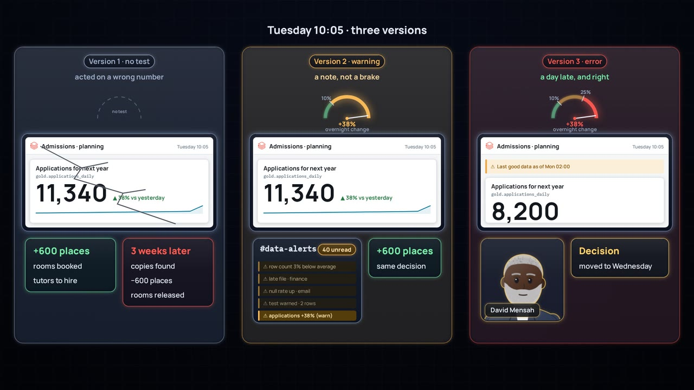
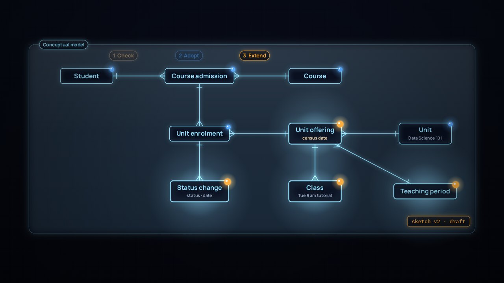

Controles de calidad de datos
Demasiado bueno para ser verdad
Las solicitudes suben un 38 % de un día para otro. Una prueba sobre el total decide si alguien actúa con esa cifra.
Un nuevo estado de inscripción llega a los datos durante la noche, y cada lado vio solo la mitad del cambio. Mira cómo una prueba y un contrato de datos hacen visible el siguiente cambio para ambos lados.
La película está en inglés. Esta página, los capítulos y las preguntas están en español.
Amplía La vida interior de los datos · Refinando con dbt y Oro
Presiona Reproducir, o salta a un capítulo. Activa Pausa para pensar y la película se detiene con una pregunta al final de los capítulos.
Leer el esquema de la historia (en inglés)
La luz son los datos, como en La vida interior de los datos. El contorno de cada persona muestra su lado: cian para el técnico, dorado para el de negocio. El ámbar marca una advertencia, o algo nuevo que espera una decisión; el rojo, una prueba que detuvo la actualización. La universidad, las personas y las cifras son ficticias. La narración es una voz sintética.
Los subtítulos en inglés están activados; puedes quitarlos con Subtítulos. Archivos de subtítulos para otros reproductores: en.srt y en.vtt (en inglés).
¿Y ahora?
Las cuatro preguntas de Pausa para pensar, para una clase o un equipo. Abre una para ver la respuesta.

Controles de calidad de datos
Las solicitudes suben un 38 % de un día para otro. Una prueba sobre el total decide si alguien actúa con esa cifra.

Modelado de datos
Dos cifras confiables no coinciden. ¿Cuándo necesita más precisión un modelo sencillo, y cómo se usa un modelo de referencia sin copiarlo?

Empieza aquí
Sigue una inscripción desde un toque en el teléfono hasta una decisión, pasando por Databricks y dbt.